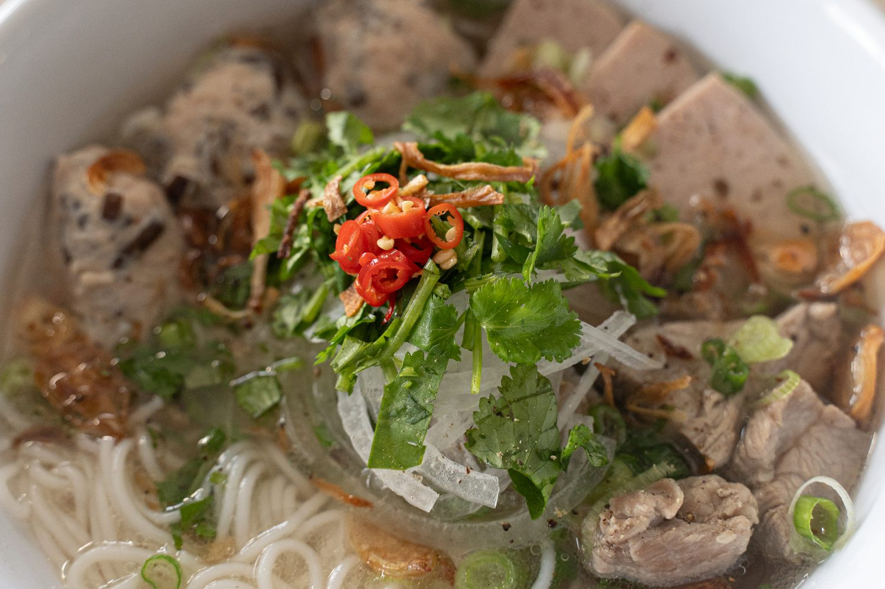

Bún Mọc

Ingredients
Broth
- 6 quarts water
- 2 lbs pork spareribs
- 1 yellow onion
- 2 inch knob ginger
Moc (Meatball)
- 16 oz gio song / pork paste
- 1/4 dried wood ear mushroom
Noodles
- 1 lb rice vermicelli noodles
Toppings
Garnishes
- Green onion
- Cilantro
- White onion
Steps
- Parboil pork spareribs, then rinse and clean pork under cold water to remove the porky odor
- Char onion and ginger on a dry pan, open flame, or broil on an oven rack
- To a clean stockpot, add four quarts of water, add cleaned pork, and charred aromatics
- Bring up to a boil, skim off any impurities, and simmer covered for one hour. Then remove onion and ginger to help keep the broth light and clean
Moc (Meatball)
- Rehydrate dried wood ear mushroom in warm water for ten minutes
- In a mixing bowl, combine pork paste, wood ear mushroom, minced shallots and black pepper
- Form small balls with two spoons, and drop into stock pot to cook through
Noodles
- Bring salted water up to a boil, add rice vermicelli noodles, and cook for 5-6 minutes. Take the pot off the heat, cover it, and let the noodles sit in the pot for another 5-6 minutes. Drain and rinse under cold water to stop the cooking process, and toss in oil to prevent noodles from sticking
Garnishes
- Thinly slice white onion, and submerge in cold water to remove raw onion flavor. Cut green onions, cilantro and Thai chili
Assembly
- To serve, add noodles, pork meat balls, toppings, broth, and garnishes to a bowl